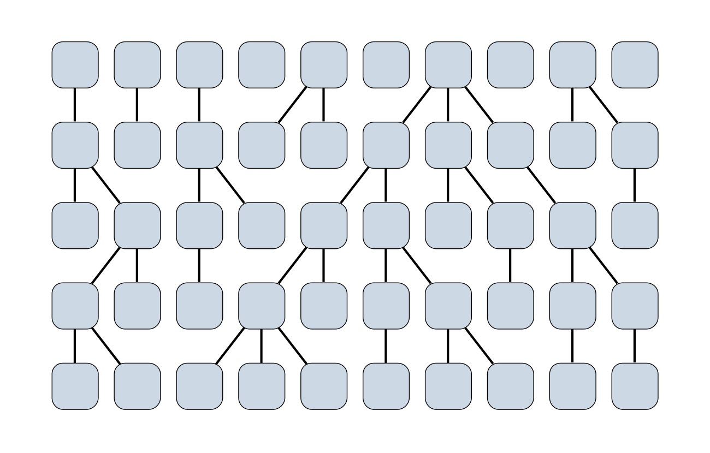
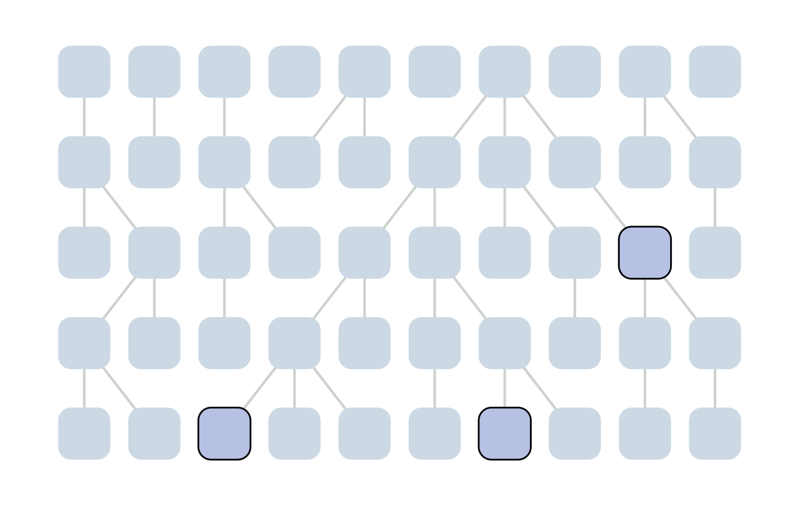
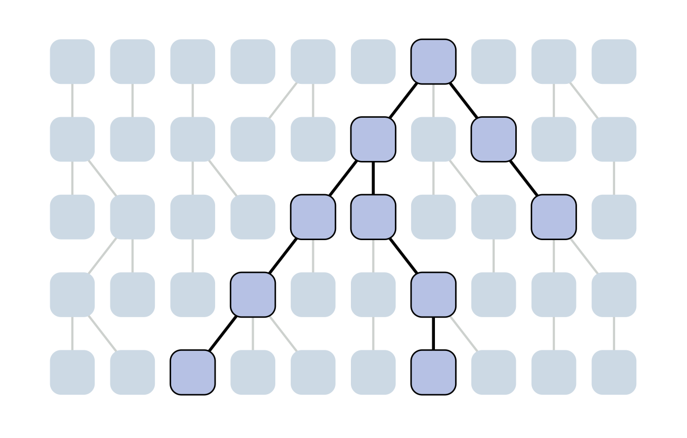
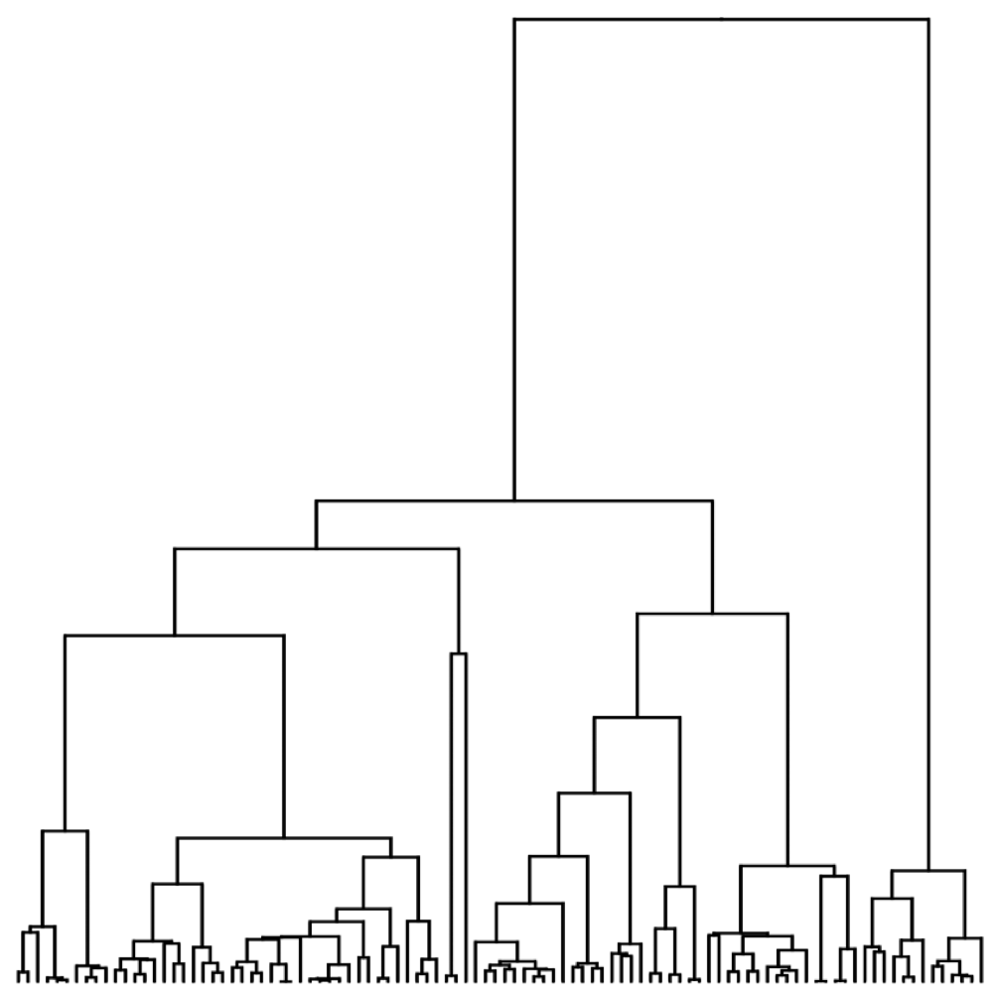
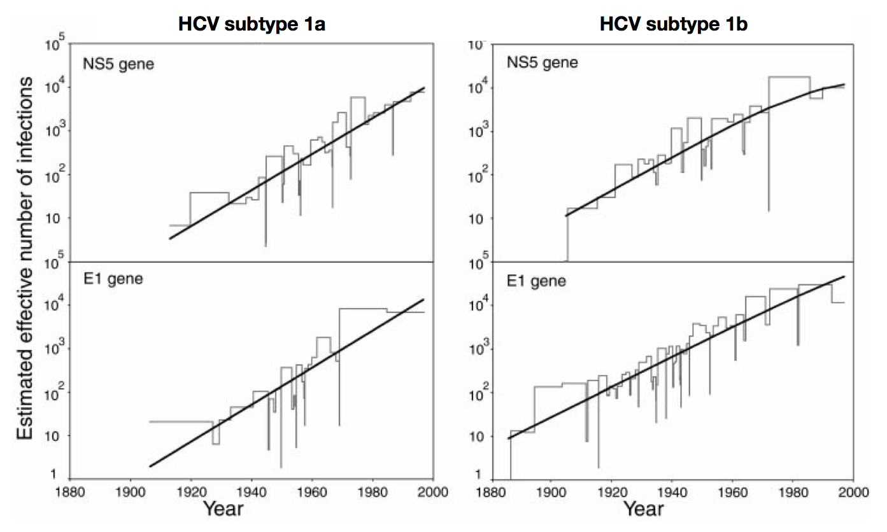
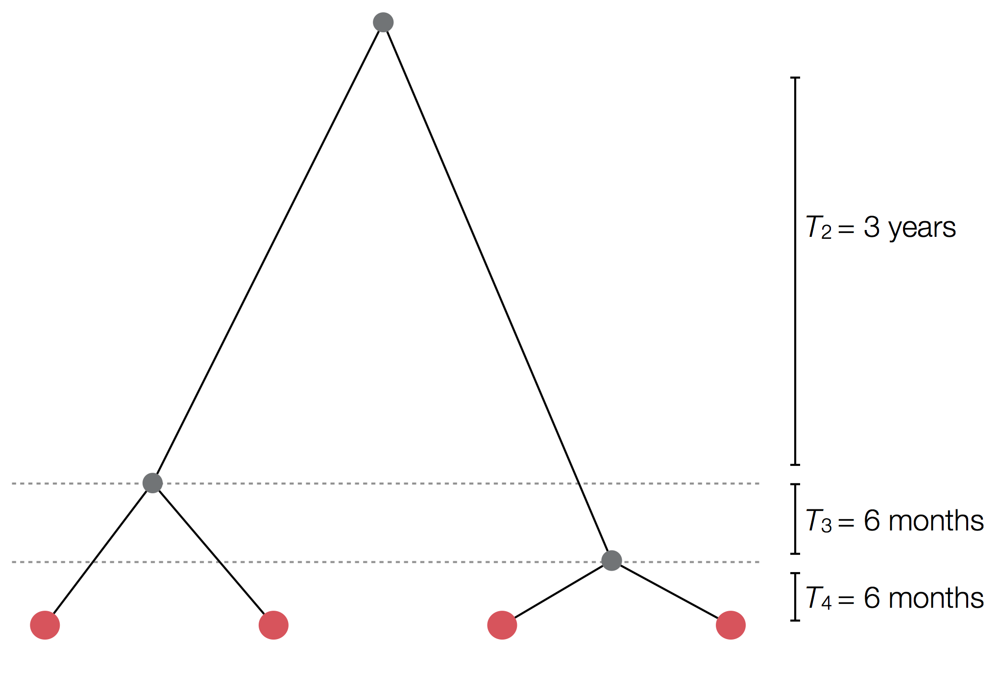
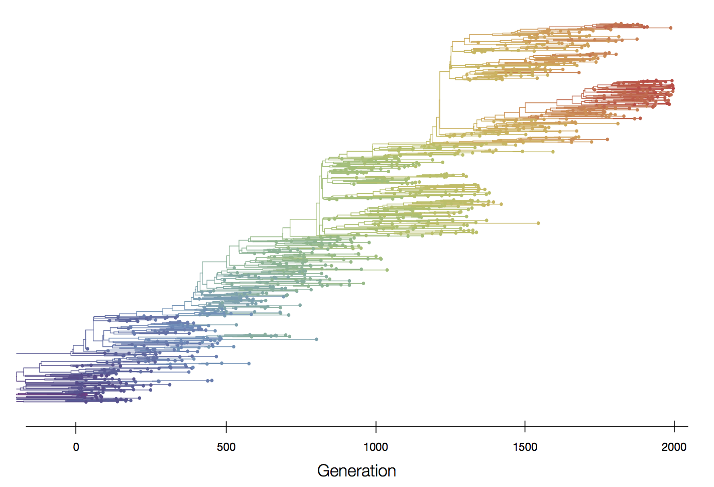

The coalescent
Epidemic process

Sample some individuals

Sequence and determine phylogeny

Sequence and determine phylogeny

Wright-Fisher process
Sample some individuals
Each generation coalescence may occur

Each generation coalescence may occur

Each generation coalescence may occur

Each generation coalescence may occur

Set of coalescent intervals

Per-generation probability of coalescence
$$\mathrm{Pr}(\mathrm{coal} \, | \, i=2) = \frac{1}{N}$$
Probability of first lineage picking an arbitrary parent is 1, while the probability of the 2nd lineage picking the same parent is $\frac{1}{N}$.
Probability of coalescence scales inversely with population size.
Per-generation probability of coalescence
$$\mathrm{Pr}(\mathrm{coal}) = \binom{i}{2} \frac{1}{N} = \frac{i(i-1)}{2N}$$
There are $\binom{i}{2}$ ways pairs of lineages can pick the same parent.
Probability of coalescence scales quadratically with lineage count.
Expected waiting time to coalescence
$$\mathrm{E}[T_i] = \frac{2N}{i(i-1)}$$
This is a geometric distribution. If each generation there is a $\frac{1}{x}$ probability of an event occurring, we expect to wait $x$ generations for the event to occur.
Continuous time limit
With per-generation probability of an event $\frac{1}{x}$ small, but many generations, then the
discrete time geometric distribution approximates to a continuous time
exponential distribution.
Thus, we assume $T_i$ to be exponentially distributed with mean
$$\mathrm{E}[T_i] = \frac{2N}{i(i-1)}.$$
Set of coalescent intervals with waiting times

Gives coalescent trees their distinctive shape
Rate of coalescence scales with population size N

Visualization of the coalescent process
Pairwise genetic diversity

Time to the most recent common ancestor (TMRCA)

Coalescence patterns can estimate population growth/decline
Changing population size alters coalescent rate

Changing population size alters coalescent rate

'Skyline' is flexible demographic model that estimates windows of coalescent rate

Skyline model shows population growth in HCV
Skyline model shows seasonality in flu

Interpreting rate of coalescence
These approaches directly estimate the pairwise rate of coalescence $\lambda$, which is measured in terms of events per year. Thus, the timescale of coalescence $\frac{1}{\lambda}$ is measured as the expected waiting time in years for two lineages to find a common ancestor.
Interpreting rate of coalescence
The timescale of coalescence $\frac{1}{\lambda}$ is equal to $N_e\tau$, where $N_e$ is measured in generations and $\tau$ is measured in years per generation. $\tau$ acts to rescale time from generations to years.
Example tree
Example skyline plot

Exercise: plot skyline from tree

Selection distorts coalescence patterns
Neutral population dynamics

Purifying selection reduces genetic diversity and leads to population stasis

Positive selection reduces genetic diversity leads to population turnover
Episodic positive selection shows selective sweeps